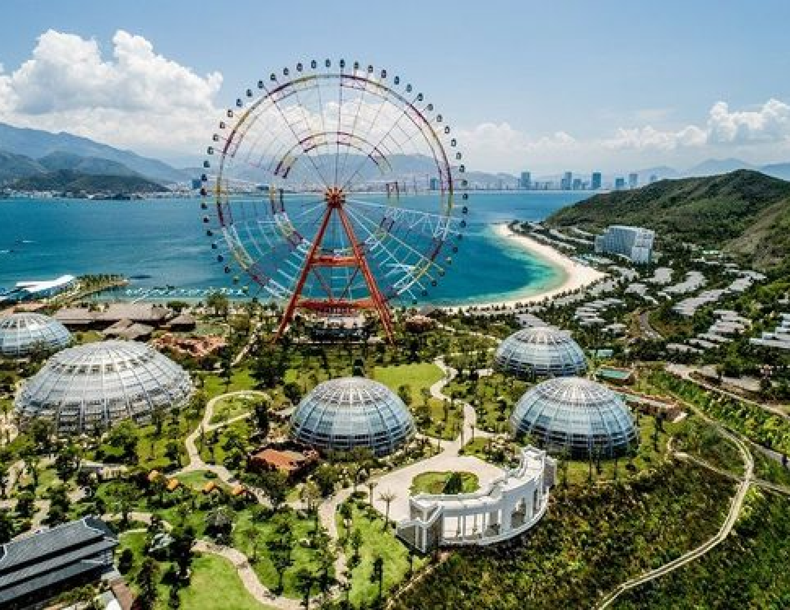
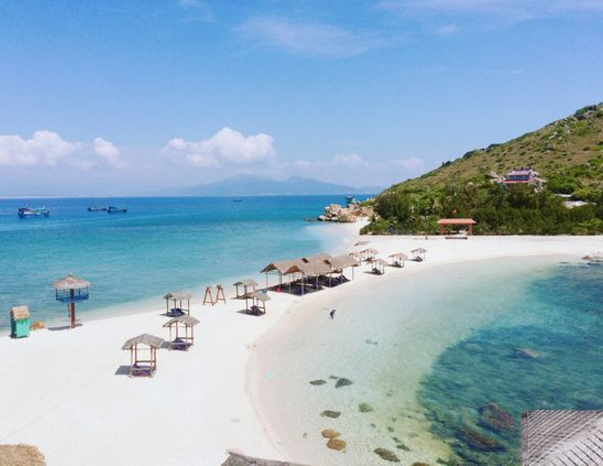
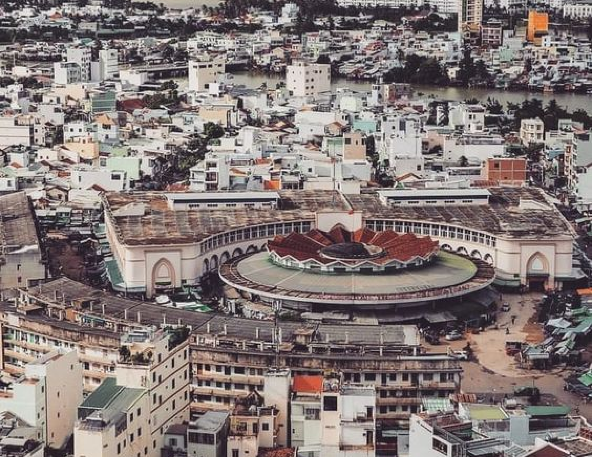

nha Trang
NHA TRANG
Nha Trang, located on Vietnam's south-central coast, is a popular beach destination known for its crystal-clear waters, white sandy beaches, and vibrant marine life. The city offers a perfect mix of relaxation and adventure, with options for snorkeling, diving, and exploring nearby islands. Beyond its natural beauty, Nha Trang boasts cultural landmarks such as the Po Nagar Cham Towers and Long Son Pagoda.
With its tropical charm and array of activities, Nha Trang is a must-visit for beach lovers and adventurers alike.
UNMISSABLE ATTRACTIONS

VinWonders Nha Trang
VinWonders Nha Trang, on Hon Tre Island, is one of Vietnam's largest amusement parks. It offers attractions like thrilling rides, water slides, an aquarium, and a 4D theater, catering to all ages. With ocean views and diverse entertainment zones, it’s a top spot for families, adventure seekers, and tourists.
Adress:
VinWonders Nha Trang, Hon Tre Island, Nha Trang, Khanh Hoa, Vietnam.
Bai Dai Beach
Bai Dai Beach, south of Nha Trang, is a pristine coastline with soft white sand and clear waters. Unlike city beaches, it offers a peaceful atmosphere, perfect for swimming, sunbathing, and enjoying fresh seafood. This hidden gem provides a serene escape from Nha Trang's busy tourist spots.
Adress:
Cam Lam District, Nha Trang, Khanh Hoa, Vietnam.


Dam Market
Dam Market, or Cho Dam, is a bustling market in the heart of Nha Trang. Known for its diverse goods, it offers fresh seafood, produce, clothing, and souvenirs. The lively atmosphere makes it a popular spot for locals and tourists to explore, sample delicacies, and experience Nha Trang's market culture.
Adress:
02 Dam, Phuoc Tien, Nha Trang, Khanh Hoa Province, Vietnam.
Po Nagar Cham Towers
The Po Nagar Cham Towers, in Nha Trang, are ancient Hindu temples from the 7th century, built by the Cham civilization. Located on a hill overlooking the Cai River, the intricately carved sandstone structures offer insights into Cham history and religion. Visitors can explore the preserved towers and enjoy panoramic views of the area.
Adress:
Vinh Phuoc, Nha Trang, Khanh Hoa Province, Vietnam.
HIDDEN GEMS OF HANOI
NHA TRANG - THAP BA PONAGAR
3 days
Availability : Every day
1 people